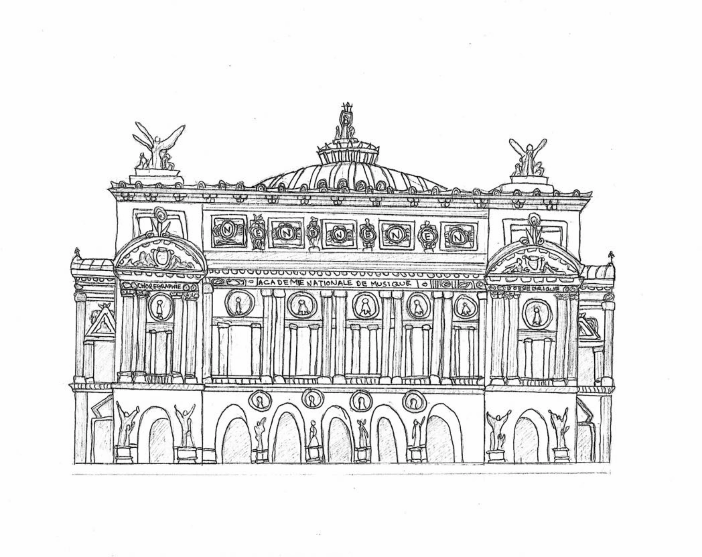
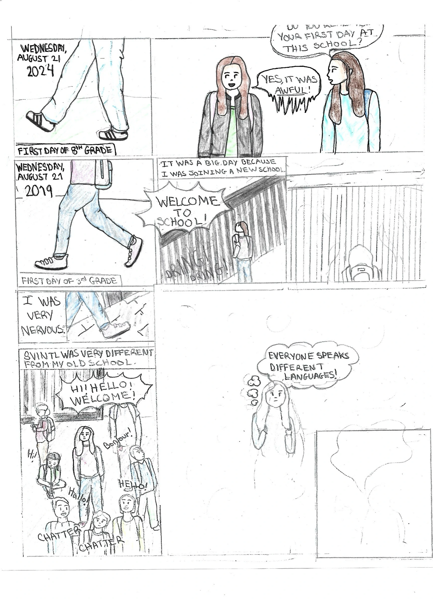
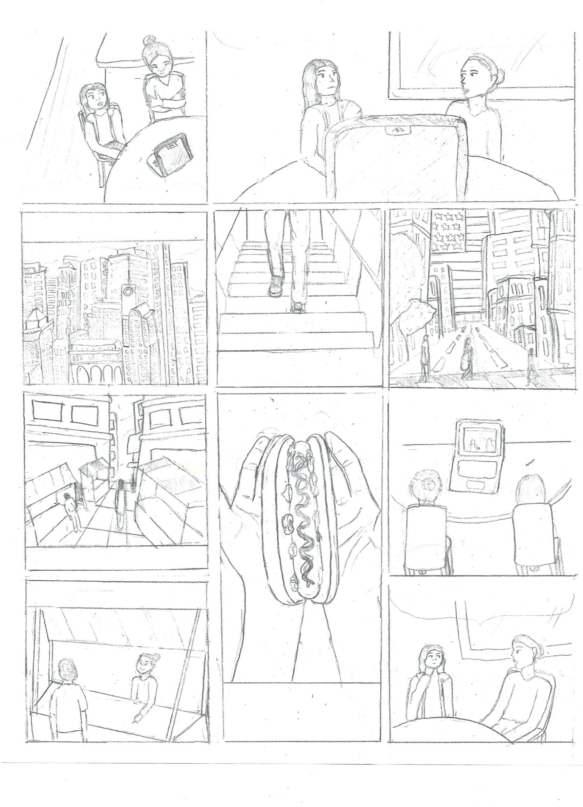
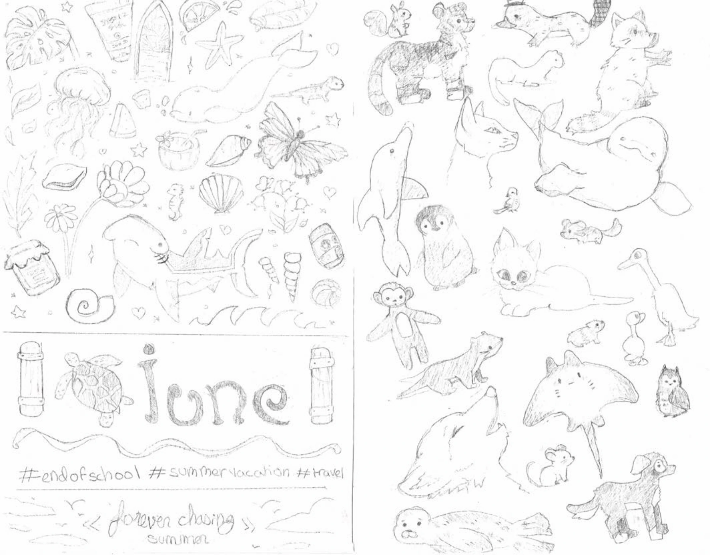
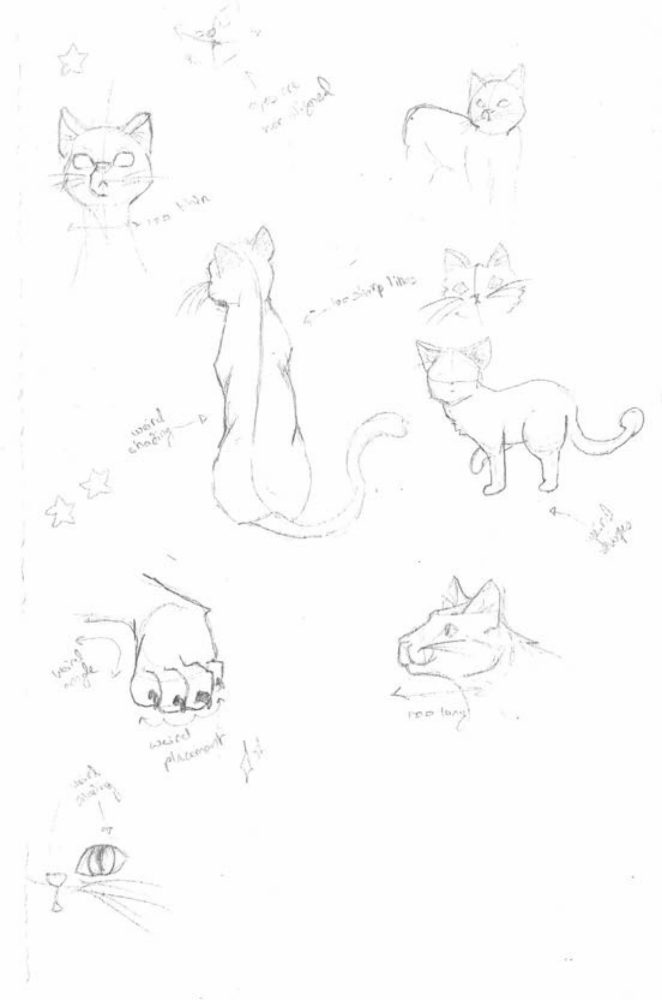

From the sketchbook
Made
by hand.
Architecture, little characters, and stories on paper.
A collection of drawings, from careful lines to loose sketches. Select any page for a closer look.
Architectural drawing · Paris
Opéra Garnier.
Arches, columns, and rooftop sculptures, traced across the ornate façade of the Palais Garnier in Paris.

Sequential art · Two pages
First day of school.
A school story told through conversations, changing viewpoints, and small everyday moments.




Sketchbook
A page full of June.
Sea creatures, flowers, animals, and tiny objects fill a playful sketchbook spread.

Character sketches
Cats, in character.
Small pencil studies of curious faces, curled tails, and feline poses.
